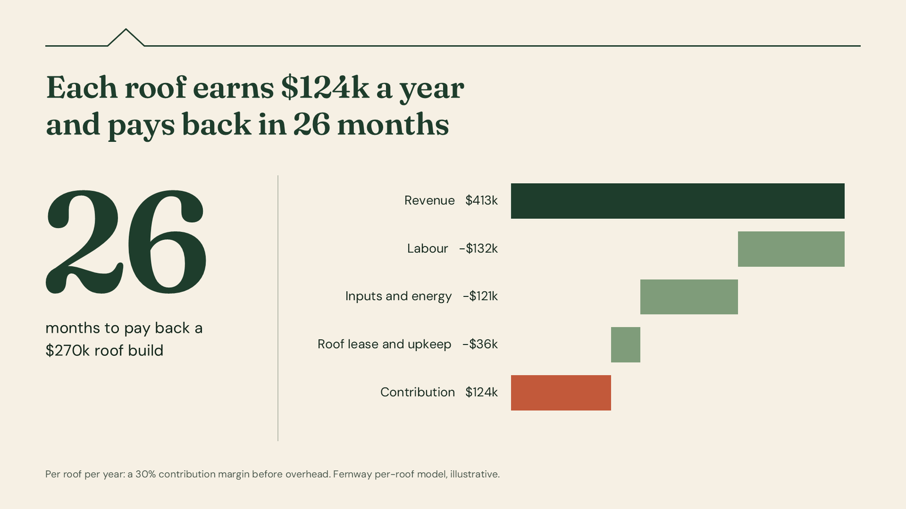
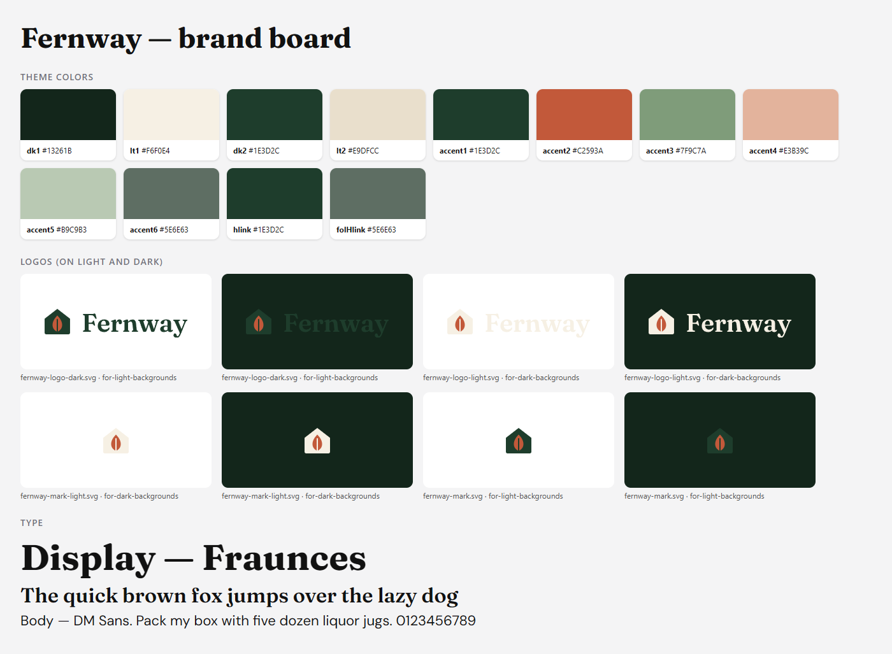
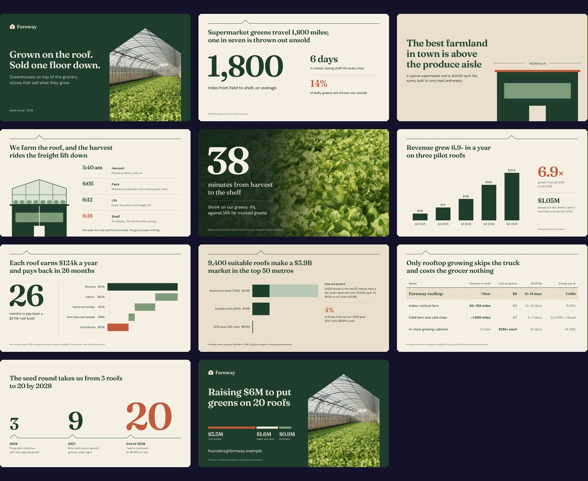
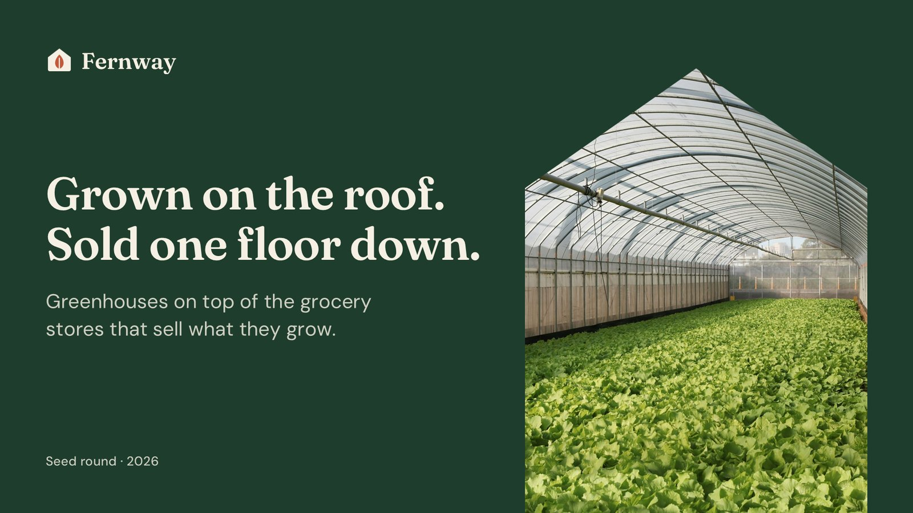
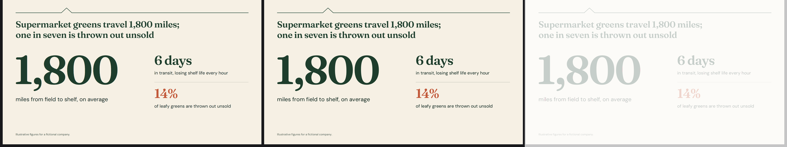
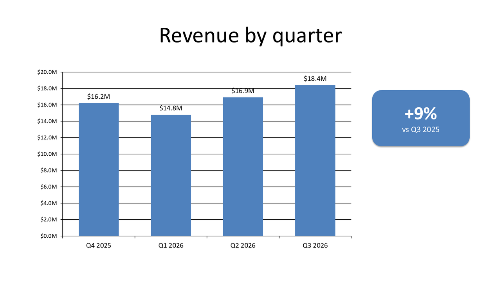
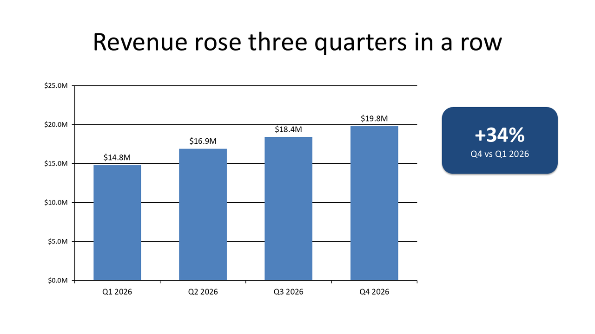

Turn a brief and your brand kit into a PowerPoint deck you can actually edit.

Picture 1 · 1 object
Click any word and you select the whole slide.
An 11-slide seed pitch for Fernway, a fictional startup that grows produce on grocery-store roofs. For seed investors, first meeting. Show the unit economics.
brief.md

Brand kit

deck.pptx · 11 native slides
Text box
Chart · data in Excel
Text box
124
native objects in the 11-slide
Fernway deck, including
69 text boxes, 3 charts
and 1 table
0
slides flattened into pictures

Fernway’s kit, and the title slide built from it
It reads .potx templates, logos, tokens, CSS and guideline PDFs.
The design
PowerPoint’s render
Pixels that differ: 0.0%

The check allows ±2 px for how renderers round glyphs.
A rewrapped line, a shifted block or a wrong colour fails the build.
0 px
Measured baseline error across 175 text styles, calibrated against PowerPoint itself.
25
slide transitions, Morph included
14
entrance animations, each read back from PowerPoint
Create
A new deck from a brief, documents, data or a website
Edit
Your deck, changed in place: words, numbers, charts, slides
Review
A scored critique of any deck, with exact fixes
Before: the Q3 review

After: Q4, from
one edits.json

Round 1
Round 2, after the fixes
A real finding from round 1
“Terracotta lands on $0.9M software, the smallest use of the money. On the ask slide it tells investors that software is the point.”
Fix: put Terracotta on the $3.5M of roof builds. Fixed in round 2.
Nothing ships with a score below 4.
Scores out of 5 for the Fernway example, rounds 1 and 2 (examples/pitch-deck/qa/review.json).
/plugin install slidekick@slidekick
github.com/aarshx05/slidekick